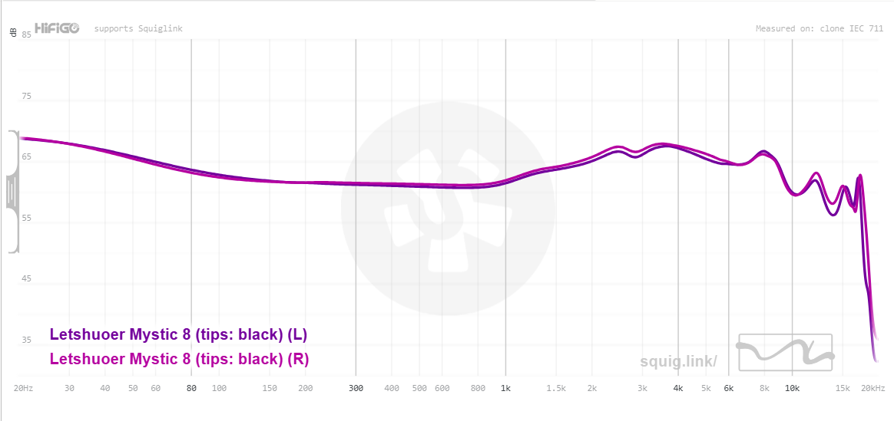

Hear How GOD Intended !
With our impeccable tunning you will experience the music like you are surrounded by angels playing the music for you.

This image was screen captured from Squig.link
With our impeccable tunning you will experience the music like you are surrounded by angels playing the music for you.
This image was screen captured from Squig.link

Let the lowest notes mankind able to hear rumble your brain.
Hear the instruments in a way that speaks to your soul.
Hear the heavenly vocals that will entrance your mind.

Heavenly tunned treble region which with well extended air.
Neutral suuucccks.... Where's the brain shaking rumble in the thundering and lightning ?. You're supposed to feel lightning and thunder in the low notes. How do I know? well, I'm the one that make it rumble in the sky...
Give.. Me... More.. Basss....
for a heavenly price you could this IEM your right now. Click that "Buy" button